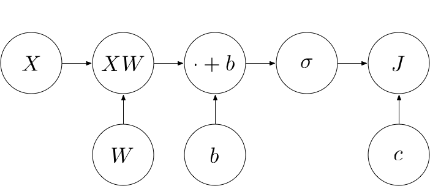

Deep Learning From Scratch III: Training Criterion
This is part 3 of a series of tutorials, in which we develop the mathematical and algorithmic underpinnings of deep neural networks from scratch and implement our own neural network library in Python, mimicking the TensorFlow API. Start with the first part: I: Computational Graphs.
- Part I: Computational Graphs
- Part II: Perceptrons
- Part III: Training Criterion
- Part IV: Gradient Descent and Backpropagation
- Part V: Multi-Layer Perceptrons
- Part VI: TensorFlow
Training criterion
Great, so now we are able to classify points using a linear classifier and compute the probability that the point belongs to a certain class, provided that we know the appropriate parameters for the weight matrix $W$ and bias $b$. The natural question that arises is how to come up with appropriate values for these. In the red/blue example, we just looked at the training points and guessed a line that nicely separated the training points. But generally we do not want to specify the separating line by hand. Rather, we just want to supply the training points to the computer and let it come up with a good separating line on its own. But how do we judge whether a separating line is good or bad?
The misclassification rate
Ideally, we want to find a line that makes as few errors as possible. For every point $x$ and class $c(x)$ drawn from the true but unknown data-generating distribution $p_\text{data}(x, c(x))$, we want to minimize the probability that our perceptron classifies it incorrectly - the probability of misclassification:
$$\underset{W, b}{\text{argmin}} p(\hat{c}(x) \neq c(x) \mid x, c(x) \, \tilde{} \, p_\text{data} )$$
Generally, we do not know the data-generating distribution $p_\text{data}$, so it is impossible to compute the exact probability of misclassification. Instead, we are given a finite list of $N$ training points consisting of the values of $x$ with their corresponding classes. In the following, we represent the list of training points as a matrix $X \in \mathbb{R}^{N \times d}$ where each row corresponds to one training point and each column to one dimension of the input space. Moreover, we represent the true classes as a matrix $c \in \mathbb{R}^{N \times C}$ where $c_{i, j} = 1$ if the $i$-th training sample has class $j$. Similarly, we represent the predicted classes as a matrix $\hat{c} \in \mathbb{R}^{N \times C}$ where $\hat{c}_{i, j} = 1$ if the $i$-th training sample has a predicted class $j$. Finally, we represent the output probabilities of our model as a matrix $p \in \mathbb{R}^{N \times C}$ where $p_{i, j}$ contains the probability that the $i$-th training sample belongs to the j-th class.
We could use the training data to find a classifier that minimizes the misclassification rate on the training samples:
$$
\underset{W, b}{\text{argmin}} \frac{1}{N} \sum_{i = 1}^N I(\hat{c}_i \neq c_i)
$$
However, it turns out that finding a linear classifier that minimizes the misclassification rate is an intractable problem, i.e. its computational complexity is exponential in the number of input dimensions, rendering it unpractical. Moreover, even if we have found a classifier that minimizes the misclassification rate on the training samples, it might be possible to make the classifier more robust to unseen samples by pushing the classes further apart, even if this does not reduce the misclassification rate on the training samples.
Maximum likelihood estimation
An alternative is to use maximum likelihood estimation, where we try to find the parameters that maximize the probability of the training data:
\underset{W, b}{\text{argmax}} p(\hat{c} = c) \\
\end{align}\begin{align}
= \underset{W, b}{\text{argmax}} \prod_{i=1}^N p(\hat{c}_i = c_i) \\
\end{align}\begin{align}
= \underset{W, b}{\text{argmax}} \prod_{i=1}^N \prod_{j=1}^C p_{i, j}^{I(c_i = j)} \\
\end{align}\begin{align}
= \underset{W, b}{\text{argmax}} \prod_{i=1}^N \prod_{j=1}^C p_{i, j}^{c_{i, j}} \\
\end{align}\begin{align}
= \underset{W, b}{\text{argmax}} log \prod_{i=1}^N \prod_{j=1}^C p_{i, j}^{c_{i, j}} \\
\end{align}\begin{align}
= \underset{W, b}{\text{argmax}} \sum_{i=1}^N \sum_{j=1}^C c_{i, j} \cdot log \, p_{i, j} \\
\end{align}\begin{align}
= \underset{W, b}{\text{argmin}} - \sum_{i=1}^N \sum_{j=1}^C c_{i, j} \cdot log \, p_{i, j} \\
\end{align}\begin{align}
= \underset{W, b}{\text{argmin}} J
\end{align}
We refer to $J = - \sum_{i=1}^N \sum_{j=1}^C c_{i, j} \cdot log \, p_{i, j}$ as the cross-entropy loss. We want to minimize $J$.
We can view $J$ as yet another operation in our computational graph that takes the input data $X$, the true classes $c$ and our predicted probabilities $p$ (which are the output of the $\sigma$ operation) as input and computes a real number designating the loss:

Building an operation that computes $J$
We can build up $J$ from various more primitive operations. Using the element-wise matrix multiplication $\odot$, we can rewrite $J$ as follows:
$$
- \sum_{i=1}^N \sum_{j=1}^C (c \odot log \, p)_{i, j}
$$
Going from the inside out, we can see that we need to implement the following operations:
- $log$: The element-wise logarithm of a matrix or vector
- $\odot$: The element-wise product of two matrices
- $\sum_{j=1}^C$: Sum over the columns of a matrix
- $\sum_{i=1}^N$: Sum over the rows of a matrix
- $-$: Taking the negative
Let’s implement these operations.
log
This computes the element-wise logarithm of a tensor.
class log(Operation):
"""Computes the natural logarithm of x element-wise.
"""
def __init__(self, x):
"""Construct log
Args:
x: Input node
"""
super().__init__([x])
def compute(self, x_value):
"""Compute the output of the log operation
Args:
x_value: Input value
"""
return np.log(x_value)multiply / $\odot$
This computes the element-wise product of two tensors of the same shape.
class multiply(Operation):
"""Returns x * y element-wise.
"""
def __init__(self, x, y):
"""Construct multiply
Args:
x: First multiplicand node
y: Second multiplicand node
"""
super().__init__([x, y])
def compute(self, x_value, y_value):
"""Compute the output of the multiply operation
Args:
x_value: First multiplicand value
y_value: Second multiplicand value
"""
return x_value * y_valuereduce_sum
We’ll implement the summation over rows, columns, etc. in a single operation where we specify an
axis. This way, we can use the same method for all types of summations. For example, axis
= 0 sums over the rows, axis = 1 sums over the columns, etc. This is exactly what
numpy.sum does.
class reduce_sum(Operation):
"""Computes the sum of elements across dimensions of a tensor.
"""
def __init__(self, A, axis=None):
"""Construct reduce_sum
Args:
A: The tensor to reduce.
axis: The dimensions to reduce. If `None` (the default), reduces all dimensions.
"""
super().__init__([A])
self.axis = axis
def compute(self, A_value):
"""Compute the output of the reduce_sum operation
Args:
A_value: Input tensor value
"""
return np.sum(A_value, self.axis)negative
This computes the element-wise negative of a tensor.
class negative(Operation):
"""Computes the negative of x element-wise.
"""
def __init__(self, x):
"""Construct negative
Args:
x: Input node
"""
super().__init__([x])
def compute(self, x_value):
"""Compute the output of the negative operation
Args:
x_value: Input value
"""
return -x_valuePutting it all together
Using these operations, we can now compute $J = - \sum_{i=1}^N \sum_{j=1}^C (c \odot log \, p)_{i, j}
$
as follows:
J = negative(reduce_sum(reduce_sum(multiply(c, log(p)), axis=1)))Example
Let’s now compute the loss of our red/blue perceptron.
# Create a new graph
Graph().as_default()
X = placeholder()
c = placeholder()
W = Variable([
[1, -1],
[1, -1]
])
b = Variable([0, 0])
p = softmax(add(matmul(X, W), b))
# Cross-entropy loss
J = negative(reduce_sum(reduce_sum(multiply(c, log(p)), axis=1)))
session = Session()
print(session.run(J, {
X: np.concatenate((blue_points, red_points)),
c:
[[1, 0]] * len(blue_points)
+ [[0, 1]] * len(red_points)
}))If you have any questions, feel free to leave a comment. Otherwise, continue with the next part: IV: Gradient Descent and Backpropagation